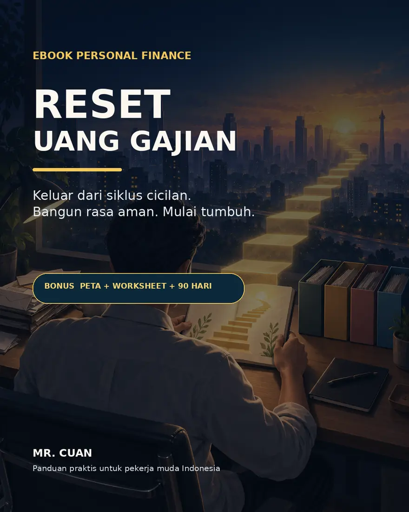

Panduan personal finance untuk pekerja muda
Gajian masuk.
Kok cepat habis?
Keluar dari siklus cicilan, membangun rasa aman, lalu mulai tumbuh — tanpa jargon dan tanpa menghakimi diri sendiri.

Kamu tidak kekurangan niat.
Kamu belum punya sistem.
Masalah biasanya bukan satu belanja besar. Yang membuat saldo cepat habis adalah tagihan, cicilan, keinginan, dan tujuan yang memakai rekening yang sama tanpa urutan.
Sistem yang bisa diulang
Empat pos.
Satu napas lebih lega.
Tekan setiap kartu untuk melihat fungsi posnya. Tidak ada angka sakti; kamu tinggal menyesuaikan dengan kondisi hidupmu sekarang.
Hidup tetap berjalan.
Biaya hidup dan tagihan yang tidak bisa ditunda. Pos ini membuat hidupmu tetap berjalan.
Naik perlahan.
Tapi naik.
Peta Tangga Keuangan membantumu fokus pada tugas yang tepat untuk posisi kamu hari ini.
Lihat apa saja di dalam ebook →Bukan cuma dibaca
Disiapkan untuk
langsung dipakai.
- 01Peta Tangga Keuangan
Tahu apa yang perlu diselesaikan terlebih dahulu.
- 02Lembar audit 15 menit
Mulai dari angka yang selama ini kamu hindari.
- 03Reset 90 hari
Rencana kecil agar sistemmu benar-benar bertahan.
- 04Checklist hari gajian
Ritual praktis untuk setiap uang yang masuk.
Tidak menjanjikan kaya mendadak
Yang kamu cari bukan sempurna.
Tapi lebih tenang.
Rasa aman dimulai dari keputusan kecil yang diulang. Ebook ini membantu kamu mengambil keputusan itu dengan lebih jelas.
Siap untuk gajian berikutnya
Reset Uang
Gajian.
Ebook personal finance yang ringkas, visual, dan jujur untuk membangun rasa aman dari kondisi kamu sekarang.
Jelas dulu,
baru mulai.
Ebook ini cocok untuk siapa?+
Untuk pekerja muda yang ingin mengatur gaji, menata cicilan, membangun dana aman, atau memulai investasi dari fondasi yang lebih sehat.
Apakah ini panduan investasi cepat kaya?+
Bukan. Fokusnya adalah membangun sistem, mengurangi kebocoran, dan mengambil keputusan yang lebih sadar sebelum meningkatkan investasi.
Format ebook-nya apa?+
Kamu menerima ebook PDF yang bisa dibaca dari ponsel, tablet, maupun laptop, bersama worksheet bonus.